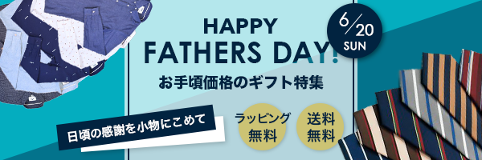

好きなように作った名刺。筑紫A丸ゴシックを知る。

びっくりするくらい褒められた。大人っぽくした。
初バナー。左に死ぬほど悩んだけど、指摘されたのは右のフォントだった。
80がでかすぎるバナー。結構うまくいけたような、そうでもないような。。。
１時間半で作ったもののキャッチコピーを評価され困惑した。
こだわってつくったものの他に紛れた。右は結構よかった。
時間がなく急いで作ったら、スッカスカになってしまった。春っぽい。
全然気にくわない。迷走した。DHCダイエットらしい。
アルゴナビ星をちりばめた。めっちゃ工夫したけど選ばれなかった。一片の悔いあり!!
いつもとは違うクールなイメージで、デザイン重視の名刺にした。
暖かい感じのクリスマス。お上品。
今まで作ったことのないタイプ。インパクト強いコテコテしたものは作りづらいから頑張った。
マスクドニンジャ。
母っぽいピンクにしてみたけどかわいいって印象が強すぎたかも。
全体的にいい出来だけど謎のダサさが拭えない おそらく黄色の丸のせい
ダサさを前面に出した
褒められた。いい感じにできた。本当〜に〜いい感じに〜